Crownlands Phase 6D development-only repetition gallery
Locked Phase 6A/6B art direction. No production maps or runtime objects are present.
Random 25 Maps
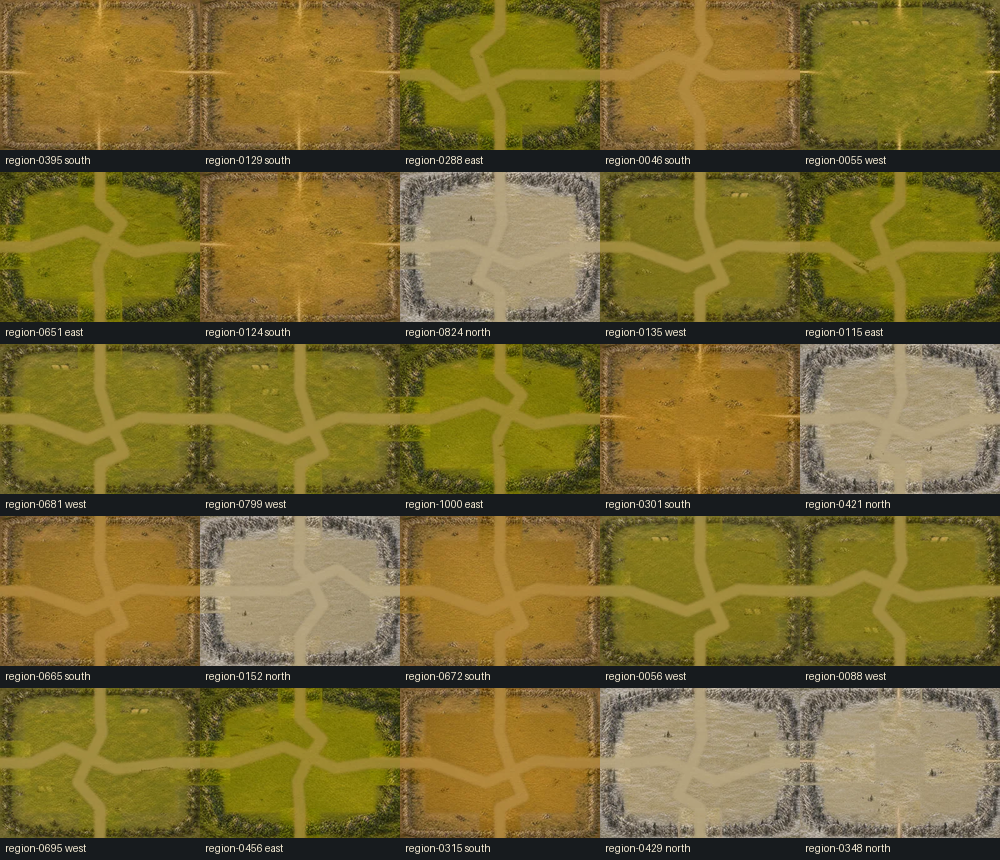
Random 25 City Layouts
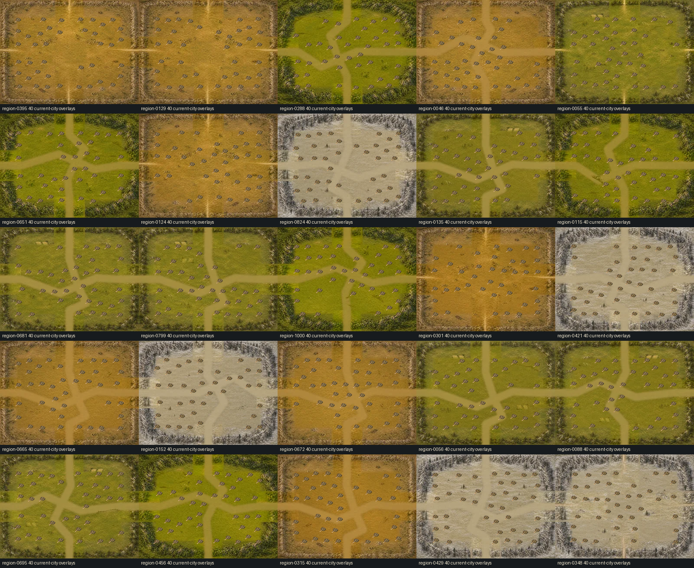
Most Similar 25 Pairs
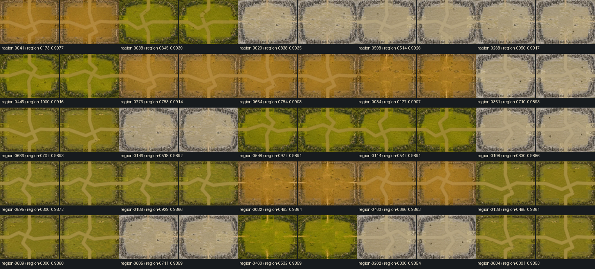
Before After Phase6C Vs Phase6D
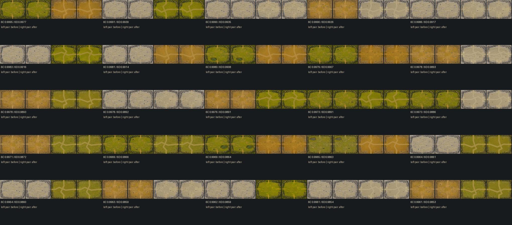
Representative North
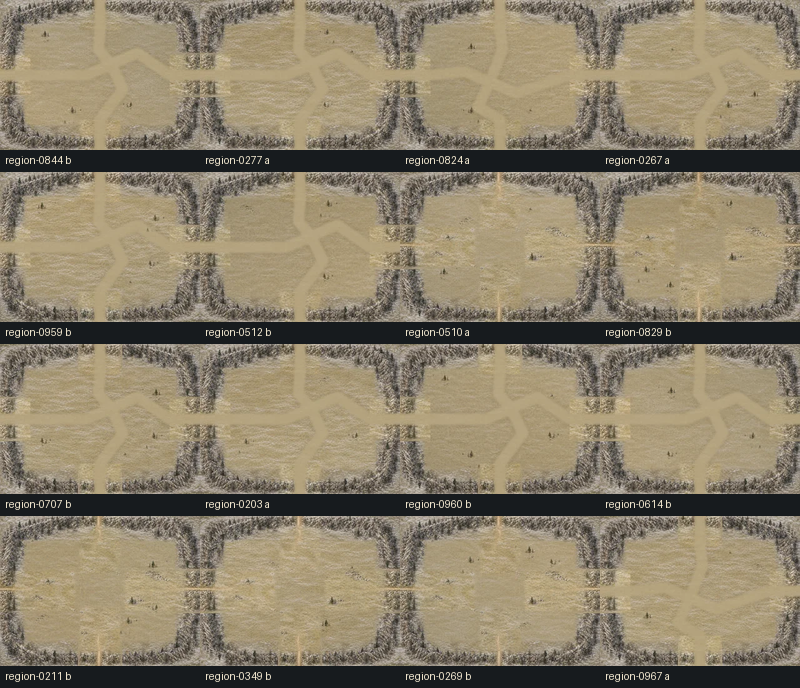
Representative East
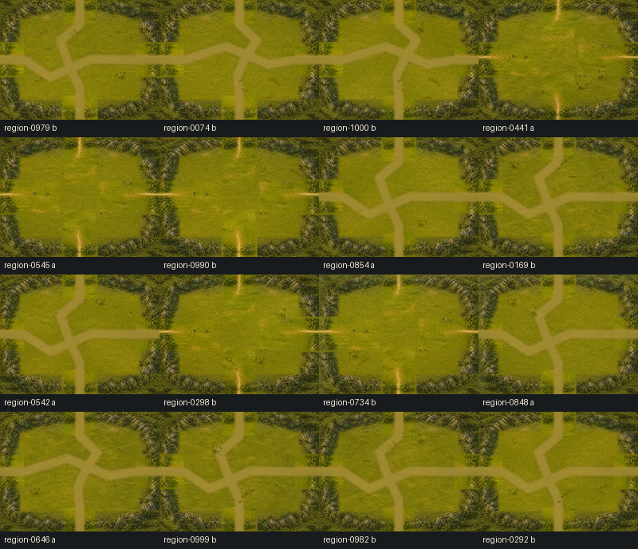
Representative South
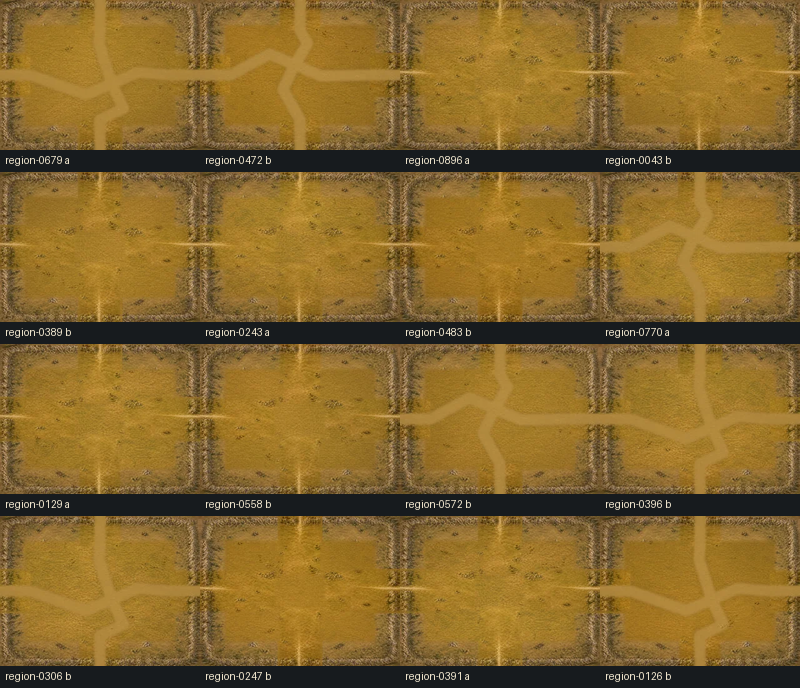
Representative West
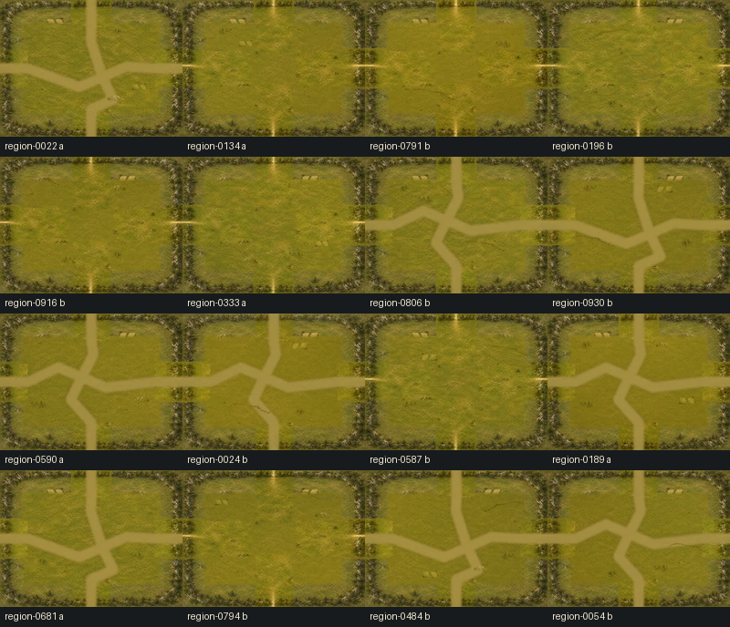
Sequential 25
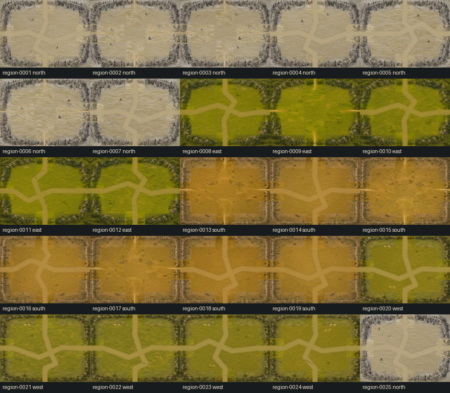
Sequential 100
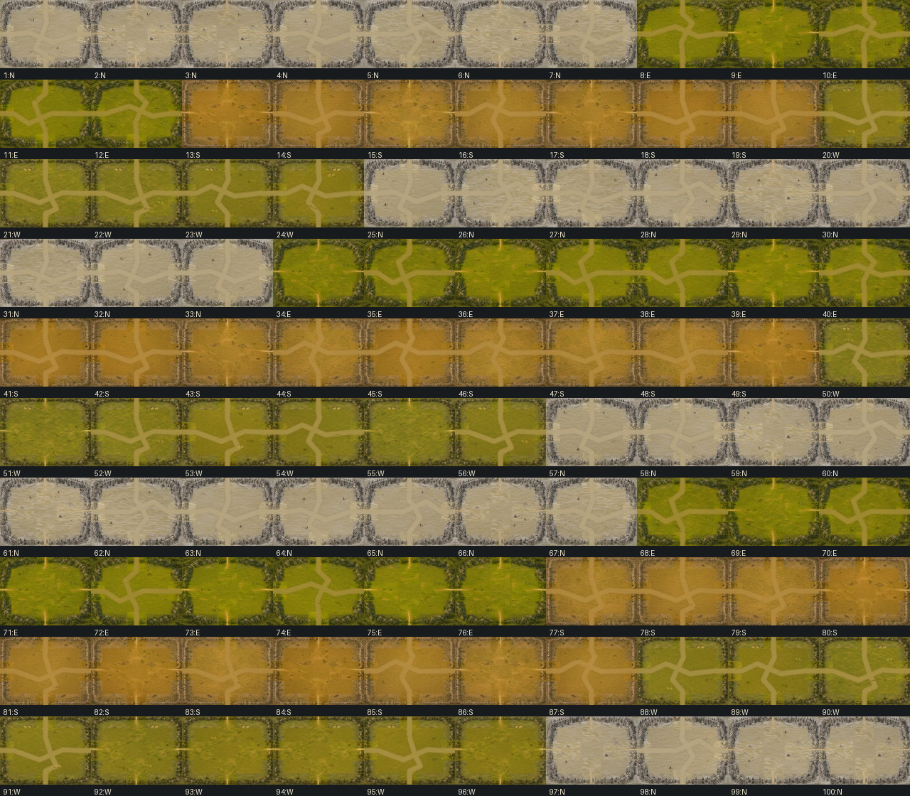
Complete Layer 1
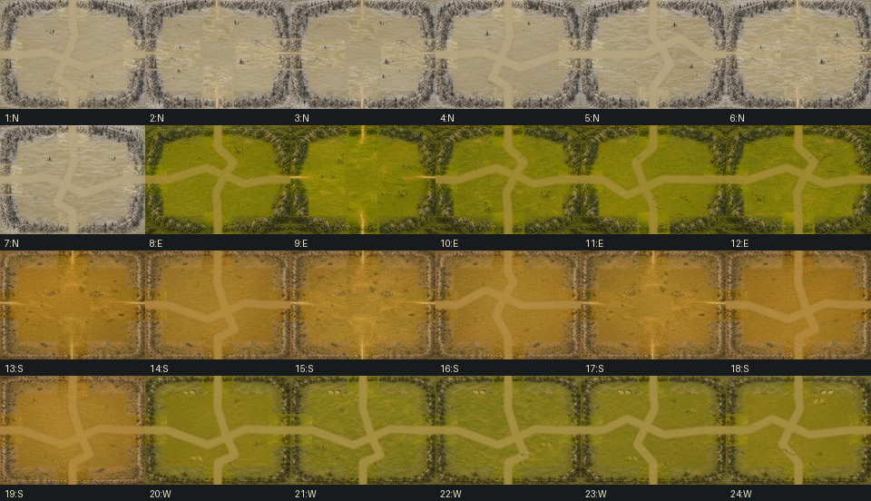
Complete Layer 2
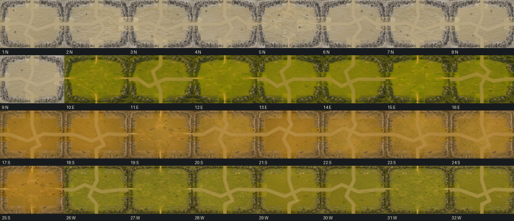
Directional Transitions
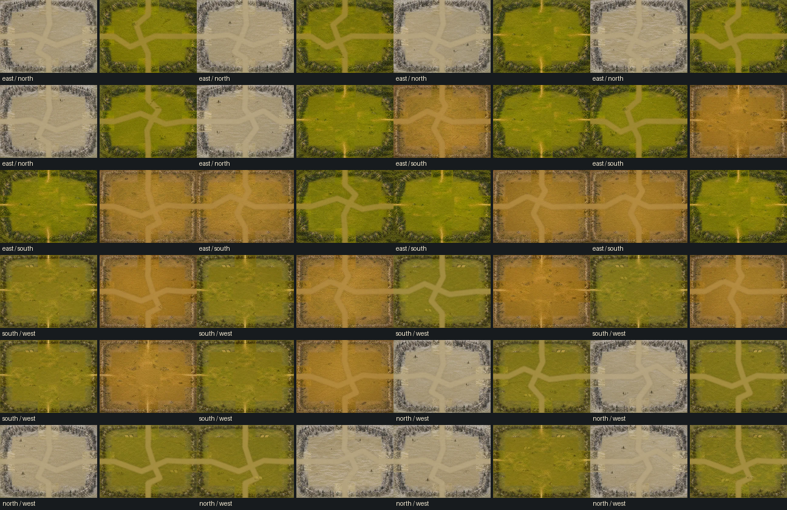
Transition North East
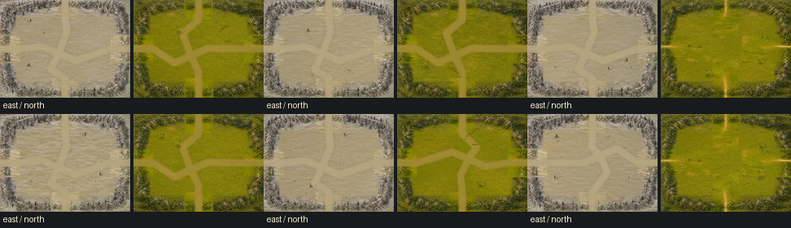
Transition North West
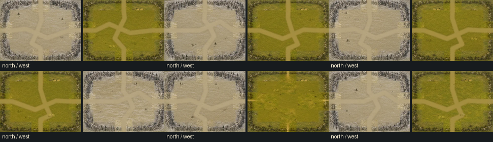
Repeated Foundations
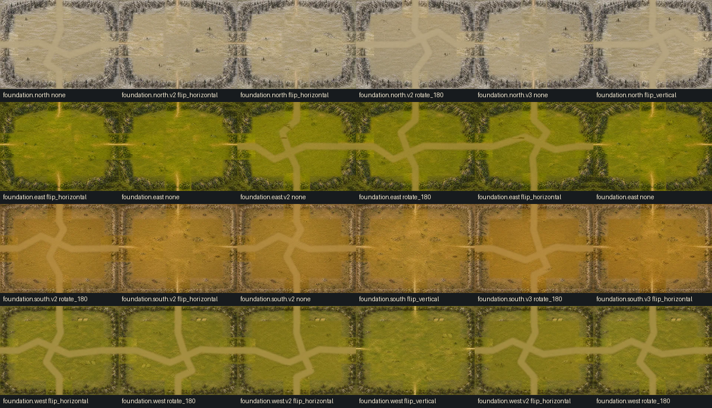
Repeated Edges
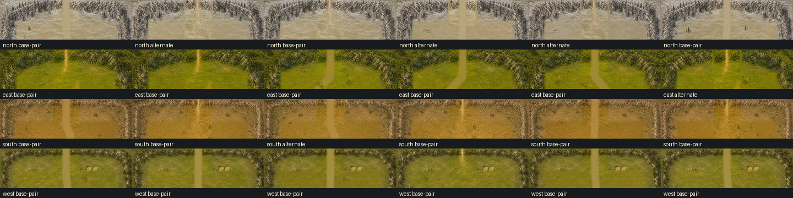
Repeated Road Layouts
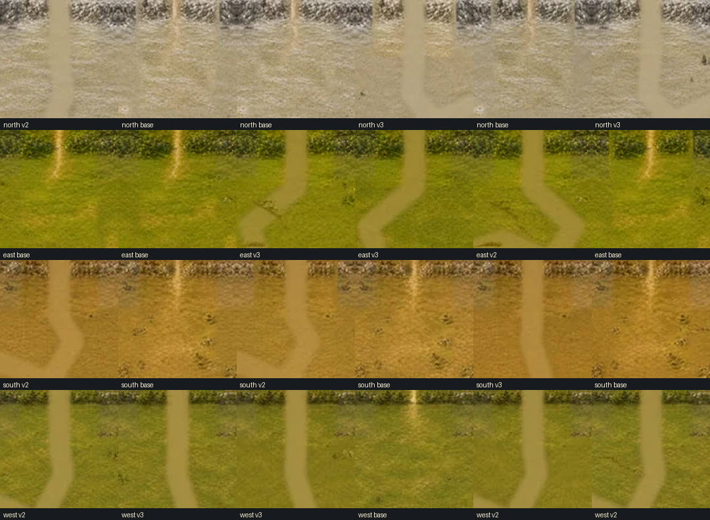